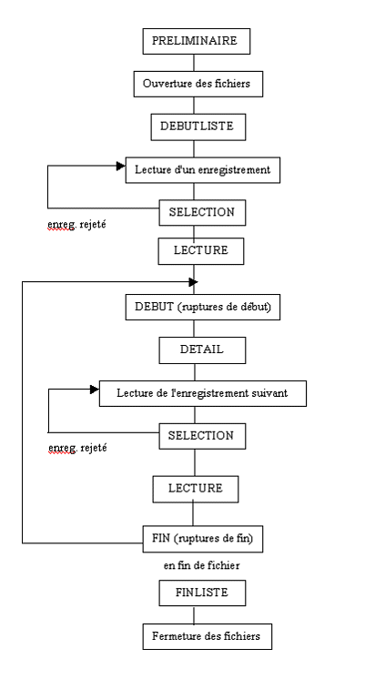
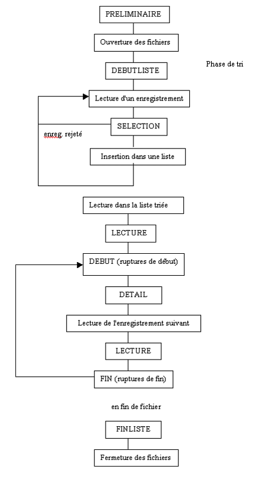

Les chapitres sont des procédures Diva appelées dans un ordre prédéterminé, toujours le même par le moteur Xhql.
L'ordre d'exécution des chapitres diffère selon que le programme inclut ou n'inclut pas un tri du fichier principal.
Pour les schémas qui suivent, les opérations qu'il n'est pas nécessaire de programmer sont indiquées en caractères minuscules ; les noms des chapitres sont en caractères majuscules.
Enchaînement des chapitres sans tri :

Enchaînement des chapitres avec tri :
